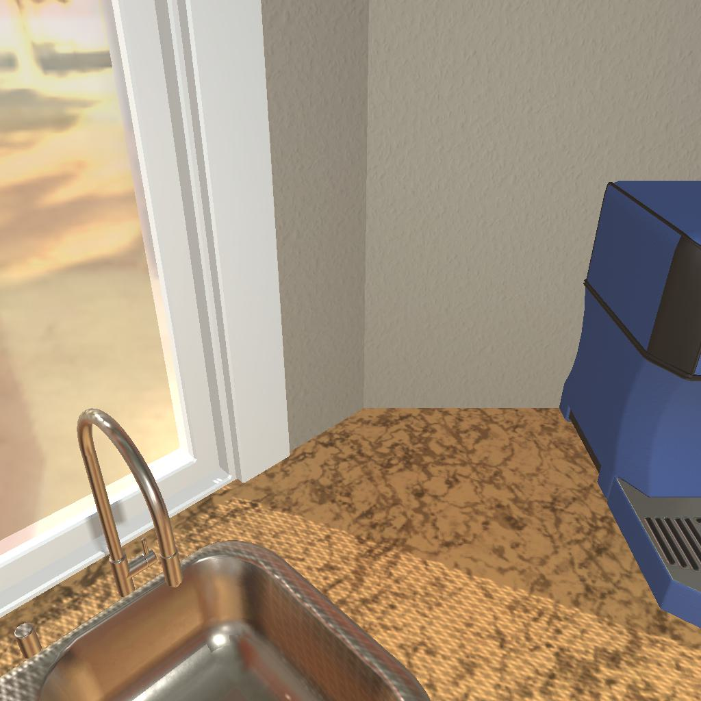

---------------------------------------------------------task: 23---------------------------------------------------------
--------------------------------------------------------------------------------------------------------------------------------------------------------------------
--------------------------------------------------------------------------------------------------------------------------------------------------------------------
Step:--------------------------------------------------------------------------0-------------------------------------------------------------------------------
----------------------------------------
VLM Prompt:
Image1:
**Instruction**
1. Analyze the provided images to identify all visible household objects and compare the difference between images (e.h. whether the object is opened or not and taken on hand or not), focusing on those relevant to the task description "put a hot mug in coffeemachine."
2. Use the analysis of images and the task hint "The agent must find an object of the desired type, pick it up, go to a microwave, heat the object with the microwave, then find the correct location to place it, and put it down there. The agent does not need to use the microwave button or open the microwave to heat the object, and the agent just needs to do action that is "heat the object with the microwave"." to answer the question: what is the most reasonable action in the choices for the task description "put a hot mug in coffeemachine"?
3. Decide and write the answer using the template: The answer is: (i): , where i is the real number. If there is no desired object in images, search every place based on **Initial Observation** to find the object. And if no one is exactly correct, choose a similar answer.
**Initial Observation**
You are in the middle of a room. Looking quickly around you, you can see cabinet (1-15), fridge (1), countertop (1-4), drawer (1-4), microwave (1), toaster (1), coffeemachine (1), garbagecan (1), sink (1), stoveburner (1-3), sinkbasin (1)
**Answer Choices**
(1): go to cabinet 1
(2): go to cabinet 2
(3): go to cabinet 3
(4): go to fridge 1
(5): go to countertop 1
(6): go to cabinet 4
(7): go to cabinet 5
(8): go to cabinet 6
(9): go to cabinet 7
(10): go to drawer 1
(11): go to drawer 2
(12): go to cabinet 8
(13): go to drawer 3
(14): go to cabinet 9
(15): go to cabinet 10
(16): go to drawer 4
(17): go to microwave 1
(18): go to cabinet 11
(19): go to toaster 1
(20): go to cabinet 12
(21): go to cabinet 13
(22): go to cabinet 14
(23): go to cabinet 15
(24): go to countertop 2
(25): go to coffeemachine 1
(26): go to garbagecan 1
(27): go to countertop 3
(28): go to countertop 4
(29): go to sink 1
(30): go to stoveburner 1
(31): go to stoveburner 2
(32): go to stoveburner 3
(33): go to sinkbasin 1
**Answer**
Let's think step by step by following the instructions.
----------------------------------------
----------------------------------------
Original Response:
Image 1 shows a kitchen with a countertop, a sink, and a coffeemachine. The coffeemachine is visible on the countertop, but there is no mug visible in the image.
Based on the task description "put a hot mug in coffeemachine," the most reasonable action would be to first find a mug. Since none is visible in the image provided, we need to search every place based on the Initial Observation to find the object.
The places where we might find a mug could be in the cabinets, drawers, or possibly on the countertop. The microwave is also mentioned, which is relevant for heating the mug once we find it.
Given the answer choices, we can disregard actions related to the fridge, toaster, garbage can, sink, stove burner, and sink basin, as these are not likely places to find a mug. The most reasonable action would be to search the cabinets and drawers first.
Since there is no specific indication of where the mug might be found, we should choose a starting point that is closest to the coffeemachine and microwave for efficiency.
The answer is: (5): go to countertop 1. This action is chosen as it is the closest location to the coffeemachine where a mug might be placed. If the mug is not found there, we will continue to search the cabinets and drawers.
----------------------------------------
----------------------------------------
>>> Refine Original VLM Response and Get Pure Action: go to countertop 1
----------------------------------------
-----------------------------------------------------------------
Running time: 11.550732851028442 seconds
Total Money: 11.481600000000004
-----------------------------------------------------------------
-----------------------------------------------------------------
Text Observation:You arrive at loc 4. On the countertop 1, you see a lettuce 1, a peppershaker 1, a soapbottle 1, a butterknife 1, and a spoon 1.
-----------------------------------------------------------------
UNSUCCEED